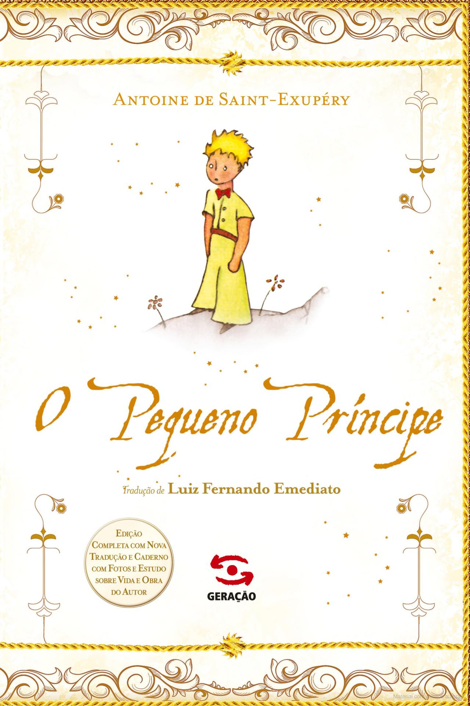
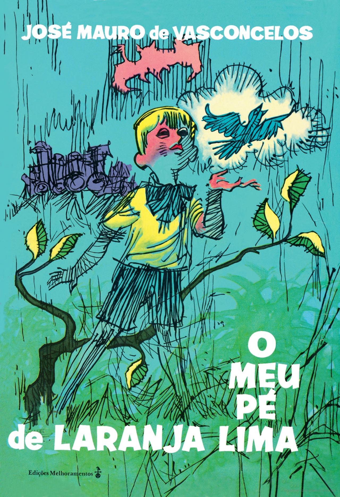

Estante de Livros Matos
Encontre seu livro facilidade!
A Menina que Roubava Livros

Sinopse:
A trajetória de Liesel Meminger é contada por uma narradora mórbida, surpreendentemente simpática. Ao perceber que a pequena ladra de livros lhe escapa, a Morte afeiçoa-se à menina e rastreia suas pegadas de 1939 a 1943. Traços de uma sobrevivente: a mãe comunista, perseguida pelo nazismo, envia Liesel e o irmão para o subúrbio pobre de uma cidade alemã, onde um casal se dispõe a adotá-los por dinheiro. O garoto morre no trajeto e é enterrado por um coveiro que deixa cair um livro na neve. É o primeiro de uma série que a menina vai surrupiar ao longo dos anos. O único vínculo com a família é esta obra, que ela ainda não sabe ler. Assombrada por pesadelos, ela compensa o medo e a solidão das noites com a conivência do pai adotivo, um pintor de parede bonachão que lhe dá lições de leitura...
Fonte: Google Books
| Data da Primeira Publicação |
Autor |
Idioma |
Gênero(s) |
| 2005 |
Markus Zusak |
Alemão, Inglês |
Romance, Ficção Juvenil, Ficção Histórica, Bildungsroman |
O Pequeno Príncipe

Sinopse:
Um piloto cai com seu avião no deserto e ali encontra uma criança loura e frágil. Ela diz ter vindo de um pequeno planeta distante. E ali, na convivência com o piloto perdido, os dois repensam os seus valores e encontram o sentido da vida. Com essa história mágica, sensível, comovente, às vezes triste, e só aparentemente infantil, o escritor francês Antoine de Saint-Exupéry criou há 70 anos um dos maiores clássicos da literatura universal. Não há adulto que não se comova ao se lembrar de quando o leu quando criança. Trata-se da maior obra existencialista do século XX, segundo Martin Heidegger. Livro mais traduzido da história, depois do Alcorão e da Bíblia, ele agora chega ao Brasil em nova edição, completa, com a tradução de Luiz Fernando Emediato e enriquecida com um caderno ilustrado sobre a obra e a curta e trágica vida do autor.
Fonte: Google Books
| Data da Primeira Publicação |
Autor |
Idioma |
Gênero(s) |
| 6 de Abril de 1943 |
Antoine de Saint-Exupéry |
Francês |
Leitura Infantil, Fábula, Novela, Ficção Especulativa |
Alice no País das Maravilhas
Sinopse:
A garota Alice vê um coelho branco entrar em uma toca. Vai atrás dele e chega ao País das Maravilhas . Ela muda de tamanho muitas vezes e conhece criaturas esquisitas, como a Lagarta, a Duquesa, o Gato de Cheshire, a Lebre de Março, o Chapeleiro Maluco e o Rei e a Rainha de Copas. Tradução de Ligia Cademartori para o clássico de Lewis Carroll.
Fonte: Google Books
| Data da Primeira Publicação |
Autor |
Idioma |
Gênero(s) |
| Novembro de 1865 |
Lewis Carroll |
Inglês |
Literatura Infantil, Literatura Fantástica, Ficção Absurdista, Fantástico. |
O Guardião
Sinopse:
Aos 25 anos, a doce Julie Barenson perdeu seu grande amor para uma doença impiedosa. Porém, ao partir, o marido lhe deixou dois presentes inesperados: um filhote de cão dinamarquês chamado Singer e a promessa de que cuidaria dela para sempre, onde quer que estivesse.
Fonte: Google Books
| Data da Primeira Publicação |
Autor |
Idioma |
Gênero(s) |
| 2003 |
Nicholas Sparks |
Inglês |
Romance, Romance de amor, Suspense, Romance Contemporâneo, Ficção Especulativa, Suspense Romântico. |
Meu Pé de Laranja Lima

Sinopse:
Quem leu o livro O meu pé de laranja lima jamais esquece as aventuras e as desventuras do herói menino Zezé. Por isso, por ter se tornado uma das histórias mais amadas pelo público de todas as idades, foi contada no cinema, em novela da tevê, publicada em 23 países e traduzida em 15 idiomas. Um grandioso sucesso. Agora, você ganha a oportunidade de reviver — ou conhecer — toda essa emoção e essa torcida por Zezé nas páginas desta edição em quadrinhos.Ele tem 6 anos. Sua família é pobre e, com o pai desempregado, vive um momento bastante difícil. Em casa, tem aqueles que o adoram, mas tem também os que não entendem seu jeito livre de ser, e o maltratam, tornando sua vida quase insuportável. Mas o menino possui algo só seu: sua imaginação.
Fonte: Google Books
| Data da Primeira Publicação |
Autor |
Idioma |
Gênero(s) |
| 1968 |
José Mauro de Vasconcelos |
Português |
Romance, Ficção Autobiográfica |